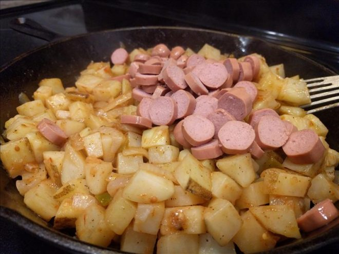

How to make Poor mans meal

Ingredients
- 6 Potatoes
- 4 hotdogs
- 1 onion
- Cooking oil you like
- About 2 tablespoon of salsa you like
- Salt and pepper to taste
Instructions
- Dice potatoes, chop onion and place in frying pan
- Pour small amount of cooking oil on top of onion and potatoes
- Turn heat down to medium
- Mix around every few minutes til potatoes brown
- Once potatoes are tender and onions are cooked add the cut hotdogs and salsa
- Gently mix while adding salt and pepper to taste